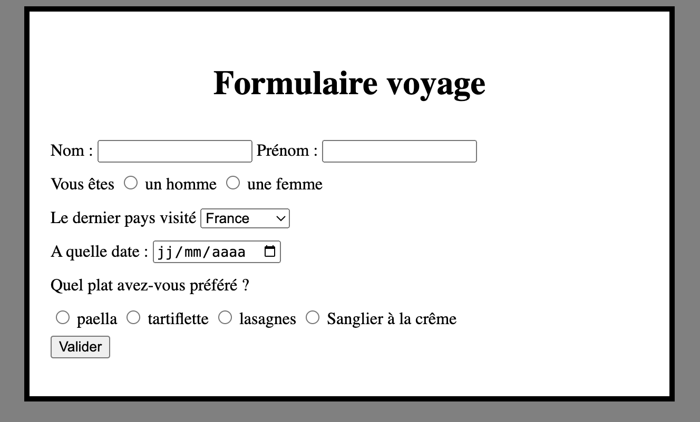

Formulaire#
Premier exemple#
Code#
Sur de nombreuses pages web, des formulaires sont utilisés que ce soit pour une authentification par identifiant et mot de passe ou pour une recherche d’informations. Le formulaire est un élément codé en HTML.
See the Pen Untitled by eric (@ga78523) on CodePen.
Exercice 1 :
Insérer ce code dans une page html. Modifier et observer ce que fait ce code.
Explications#
Dans ce fragment de code , on remarque en premier lieu l’élément form qui possède deux attributs. Le valeur de l’attribut action est l’URL à laquelle envoyer les paramètres. Le deuxième attribut method définit le mode de passage des paramètres.
Les arguments sont à saisir dans trois champs de saisie de texte, correspondant à des éléments HTML input. Ces éléments possèdent deux attributs. Le premier, type, indique que l’on souhaite un champ de saisie de texte (il existe d’autres types de d’éléments). Le second, name, indique le nom du paramètre auquel ce champ correspond.
Enfin, le dernier élément button, correspond au bouton de soumission du formulaire.
Mode de passage des paramètres#
Méthode GET#
La méthode GET est la méthode par défaut d’envoi de formulaire. Avec cette méthode, les paramètres et leurs valeurs sont directement transmis au serveur via l’URL sous la forme :
avec n1 = v1 : la valeur v1 donnée par l’utilisateur au nom n1 ;
Cette méthode est utilisée pour passer des paramètres limités soit en nombre soit en taille. En effet, les navigateurs et les serveurs web imposent tous des limites à la taille des URL. Mais cette méthode pose aussi un problème de confidentialité. Si on tape un mot de passe dans un formulaire, celui-ci va se retrouver en clair dans l’URL.
Méthode POST#
Si l’attribut method vaut post, alors les éléments sont passés de manière différente. Le navigateur forme bien la chaîne de caractères n1 = v1 & n2 = v2 & ....& nk = vk. Cependant, il envoie un message HTTP commençant par POST. Les paramètres sont alors placés dans le corps de la requête HTTP de la manière suivante :
POST /form HTTP/1.1
Host : www.nsi-première.fr
Content-Type : application/x-www-form-urlencoded
Content-Length : 30
nom=LAMBERT&prenom=Justin&age=23
Autres types de formulaires#
Texte#
La balise <input type="text"> permet la saisie d’une chaîne de caractère sans retour à la ligne. La variante <input type="password"> fonctionne de manière similaire mais n’affiche pas les caractères saisis.
La balise <textarea> correspond à une zone de saisie multilignes et redimensionnable.
Type "Radio"#
Ce type de formulaire permet à l’utilisateur de choisir une valeur parmi plusieurs. Il correspond à la balise <input type="radio">. Tous les boutons appartenant au même groupe doivent avoir la même valeur pour l’attribut name. L’attribut value définit la valeur utilisée, alors que le contenu de la balise définit chaîne de caractère affichée dans l’interface.
Exemple :
See the Pen formulaire2 : radio by eric (@ga78523) on CodePen.
Liste#
La paire d’éléments select et option permettent de définir une liste de choix. C’est sur l’élément select que l’on définit l’attribut name. Les éléments option, imbriquées dans l’élément select définissent les valeurs et les chaines affichées.
Exemple :
See the Pen Untitled by eric (@ga78523) on CodePen.
Autres#
Il existe beaucoup d’autres possibilités. Vous pouvez consulter l’adresse suivante : https://developer.mozilla.org/fr/docs/Web/HTML/Element/Input.
Exercice#
Réaliser une page internet qui comportera un formulaire. Celui-ci devra utiliser les trois types d’entrée vus dans ce cours. Celui-ci peut ressembler à la page web suivante :

Pour en savoir plus...#
Consultez le site : https://developer.mozilla.org/en-US/docs/Web/HTML/Element/form